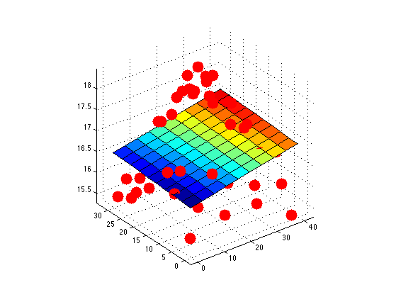
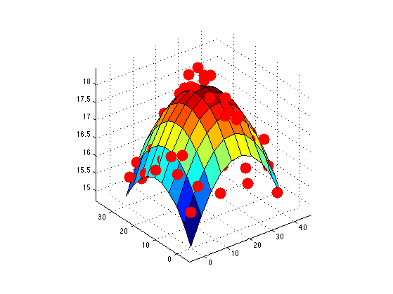

Fit linear and quadratic surfaces to data
Based on code by Romain Thibaux thibaux@eecs.berkeley.edu
% This file is from pmtk3.googlecode.com loadData('moteData'); % X,y N = size(X,1); for useQuad = 0:1 if ~useQuad Phi = [ones(N,1), X]; else Phi = [ones(N,1), X, X.^2]; end w = Phi \ y; figure; plot3(X(:,1),X(:,2),y,'.r', 'markersize', 50);axis vis3d; hold on x1 = linspace(min(X(:,1)),max(X(:,1)),10)'; y1 = linspace(min(X(:,2)),max(X(:,2)),10)'; [X1,Y1] = meshgrid(x1, y1); if useQuad Z = w(1) + w(2)*X1 + w(3)*Y1 + w(4)*X1.^2 + w(5)*Y1.^2; else Z = w(1) + w(2)*X1 + w(3)*Y1; end surf(x1, y1, Z); grid on %title('Temperature at midnight') %zlabel('Temperature'); if useQuad printPmtkFigure surfaceQuad else printPmtkFigure surfaceLinear end end 